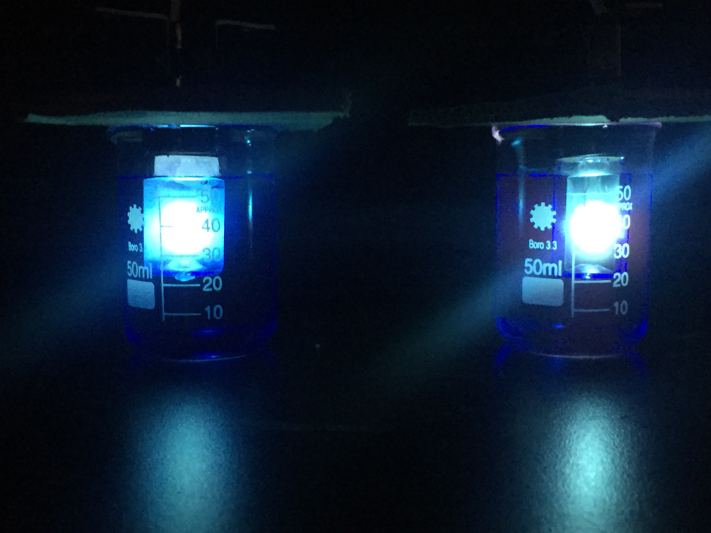

RESEARCH PROJECTS
- Measurement of Plasma Parameters by Coupling Coil Impedance
- A 10b 11.3MS/s SAR ADC Achieving 57dB SINAD and 9.16 ENOB in tsmc0.18um
- Microchip Fabrication
- Thin-Film Deposition
- Applied Low-Temperature Plasma Technology
- Measurement of Plasma Parameters by Coupling Coil Impedance
- 还有一个在做
- Academic Excellence Scholarship(6/67), 2016
- Academic Excellence Scholarship(6/67), 2017
- Third Prize in Undergraduate Physics Competition , Dec.2013
Cooperated in establishment of the physical models by COMSOL Multiphysicsn
erived an equation set among the electron density, electron temperature of plasma and the impedance of the coupling coil
Responsible for design of logic and DAC, joint debugging and MATLAB calculating
Selected monotonic switching procedure, realized good FOM and high linearity
PRIMARY INTERESTS
RESEARCH EXPERIENCES

AWARDS